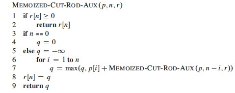

Outline
- Problem Solving Methods and Optimization Problems
- Introducing DP with the Rod Cutting Example
- Illustrating DP with the Longest Common Subsequence Example
- Summary and Comments on Optimal Substructure
Readings
Read all of CLRS Chapter 15. The focus is on the problem solving strategy: Read the examples primarily to understand the Dynamic Programming strategy rather than to memorize the specifics of each problem (although you will be asked to trace through some of the algorithms).
I have also posted a chapter by Sedgewick in Laulima. In this case, I don't think that Sedgewick is any clearer than Cormen et al. The Rod-Cutting example in Cormen et al. illustrates the basics of DP quite well. Also, although usually it is easier to understand examples first, DP examples involve tedious combinations of subproblems, so you may be better off trying to understand the gist of the strategy first in this case.
Setting the Context
Problem Solving Methods
In this course we study many well defined algorithms, including (so far) those for ADTs, sorting and searching, and others to come to operate on graphs. Quality open source implementations exist: you often don't need to implement them.
But we also study problem solving methods that guide the design of algorithms for your specific problem. Quality open source implementations may not exist for your specific problem: you may need to:
- Understand and identify characteristics of your problem
- Match these characteristics to algorithmic design patterns.
- Use the chosen design patterns to design a custom algorithm.
Such problem solving methods include divide & conquer, dynamic programming, and greedy algorithms (among others to come).
Optimization Problems
An optimization problem requires finding a/the "best" of a set of alternatives (alternative approaches or solutions) under some quality metric (which we wish to maximize) or cost metric (which we wish to minimize).
Dynamic Programming is one of several methods we will examine. (Greedy algorithms and linear programming can also apply to optimization problems.)
Basic Idea of Dynamic Programming
Dynamic programming solves optimization problems by combining solutions to subproblems.
This sounds familiar: divide and conquer also combines solutions to subproblems, but applies when the subproblems are disjoint. For example, here is the recursion tree for merge sort on an array A[1..8]. Notice that the indices at each level do not overlap):

Dynamic programming applies when the subproblems overlap. For example, here is the recursion tree for a "rod cutting" problem to be discussed in the next section (numbers indicate lengths of rods). Notice that not only do lengths repeat, but also that there are entire subtrees repeating. It would be redundant to redo the computations in these subtrees.

Dynamic programming solves each subproblem just once, and saves its answer in a table, to avoid the recomputation. It uses additional memory to save computation time: an example of a time-memory tradeoff.
There are many examples of computations that require exponential time without dynamic programming but become polynomial with dynamic programming.
Example: Rod Cutting
This example nicely introduces key points about dynamic programming.
Suppose you get different prices for steel rods of different lengths. Your supplier provides long rods; you want to know how to cut the rods into pieces in order to maximize revenue. Each cut is free. Rod lengths are always an integral number of length units (let's say they are centimeters).
Input: A length n and a table of prices pi for i = 1, 2, ..., n.
Output: The maximum revenue obtainable for rods whose lengths sum to n, computed as the sum of the prices for the individual rods.
We can choose to cut or not cut at each of the n-1 units of measurement. Therefore one can cut a rod in 2n-1 ways.
If pn is large enough, an optimal solution might require no cuts.
Example problem instance

Suppose we have a rod of length 4. There are 2n-1 = 23 = 8 ways to cut it up (the numbers show the price we get for each length, from the chart above):
Having enumerated all the solutions, we can see that for a rod of length 4 we get the most revenue by dividing it into two units of length 2 each: p2 + p2 = 5 + 5 = 10.
Optimal Substructure of Rod Cutting
Any optimal solution (other than the solution that makes no cuts) for a rod of length > 2 results in at least one subproblem: a piece of length > 1 remaining after the cut.
Claim: The optimal solution for the overall problem must include an optimal solution for this subproblem.
Proof: The proof is a "cut and paste" proof by contradiction: if the overall solution did not include an optimal solution for this problem, we could cut out the nonoptimal subproblem solution, paste in the optimal subproblem solution (which must have greater value), and thereby get a better overall solution, contradicting the assumption that the original cut was part of an optimal solution.
Therefore, rod cutting exhibits optimal substructure: The optimal solution to the original problem incorporates optimal solutions to the subproblems, which may be solved independently. This is a hallmark of problems amenable to dynamic programming. (Not all problems have this property.)
Continuing the example
Here is a table of ri, the maximum revenue for a rod of length i, for this problem instance.
To solve a problem of size 7, find the best solution for subproblems of size 7; 1 and 6; 2 and 5; or 3 and 4. Each of these subproblems also exhibits optimal substructue.
One of the optimal solutions makes a cut at 3cm, giving two subproblems of lengths 3cm and 4cm. We need to solve both optimally. The optimal solution for a 3cm rod is no cuts. As we saw above, the optimal solution for a 4cm rod involves cutting into 2 pieces, each of length 2cm. These subproblem optimal solutions are then used in the solution to the problem of a 7cm rod.
Quantifying the value of an optimal solution
The next thing we want to do is write a general expression for the value of an optimal solution that captures its recursive structure.
For any rod length n, we can determine the optimal revenues rn by taking the maximum of:
- pn: the price we get by not making a cut,
- r1 + rn-1: the maximum revenue from a rod of 1cm and a rod of n-1cm,
- r2 + rn-2: the maximum revenue from a rod of 2cm and a rod of n-2cm, ....
- rn-1 + r1
So, rn = max (pn, r1 + rn-1, r2 + rn-2, .... rn-1 + r1).
There is redundancy in this equation: if we have solved for ri and rn- i, we don't also have to solve for rn-i and ri.
A Simpler Decomposition
Rather than considering all ways to divide the rod in half, leaving two subproblems, consider all ways to cut off the first piece of length i, leaving only one subproblem of length n - i:

We don't know in advance what the first piece of length i should be, but we do know that one of them must be the optimal choice, so we try all of them.
Recursive Top-Down Solution
The above equation leads immediately to a direct recursive implementation (p is the price vector; n the problem size):
This works but is inefficient. It calls itself repeatedly on subproblems it has already solved (circled). Here is the recursion tree for n = 4:

In fact we can show that the growth is exponential. Let T(n) be the number of calls to Cut-Rod with the second parameter = n.
This has solution 2n. (Use the inductive hypothesis that it holds for j < n and then use formula A5 of Cormen et al. for an exponential series.)
Dynamic Programming Solutions
Dynamic programming arranges to solve each sub-problem just once by saving the solutions in a table. There are two approaches.
Top-down with memoization
Modify the recursive algorithm to store and look up results in a table r. Memoizing is remembering what we have computed previously.


The top-down approach has the advantages that it is easy to write given the recursive structure of the problem, and only those subproblems that are actually needed will be computed. It has the disadvantage of the overhead of recursion.
Bottom-up
One can also sort the subproblems by "size" (where size is defined according to which problems use which other ones as subproblems), and solve the smaller ones first.

The bottom-up approach requires extra thought to ensure we arrange to solve the subproblems before they are needed. (Here, the array reference r[j - i] ensures that we only reference subproblems smaller than j, the one we are currently working on.)
The bottom-up approach can be more efficient due to the iterative implementation (and with careful analysis, unnecessary subproblems can be excluded).
Asymptotic running time
Both the top-down and bottom-up versions run in Θ(n2) time.
Bottom-up: there are doubly nested loops, and the number of iterations for the inner loop forms an arithmetic series.
Top-down: Each subproblem is solved just once. Subproblems are solved for sizes 0, 1, ... n. To solve a subproblem of size n, the
forloop iterates n times, so over all recursive calls the total number of iterations is an arithmetic series. (This uses aggregate analysis, covered in a later lecture.)
Constructing a Solution
The above programs return the value of an optimal solution. To construct the solution itself, we need to record the choices that led to optimal solutions. Use a table s to record the place where the optimal cut was made (compare to Bottom-Up-Cut-Rod):
For our problem, the input data and the tables constructed are:

We then trace the choices made back through the table s with this procedure:

Trace the calls made by Print-Cut-Rod-Solution(_p_, 8)...
Four Steps of Problem Solving with Dynamic Programming
In general, we follow these steps when solving a problem with dynamic programming:
Characterize the structure of an optimal solution:
- How are optimal solutions composed of optimal solutions to subproblems?
- Assume you have an optimal solution and show how it must decompose
- Sometimes it is useful to write a brute force solution, observe its redunancies, and characterize a more refined solution
- e.g., our observation that a cut produces one to two smaller rods that can be solved optimally
Recursively define the value of an optimal solution:
- Write a recursive cost function that reflects the above structure
- e.g., the recurrence relation shown
Compute the value of an optimal solution:
- Write code to compute the recursive values, memoizing or solving smaller problems first to avoid redundant computation
- e.g.,
Bottom-Up-Cut-Rod
Construct an optimal solution from the computed information:
- Augment the code as needed to record the structure of the solution
- e.g.,
Extended-Bottom-Up-Cut-RodandPrint-Cut-Rod-Solution
The steps are illustrated in the next example.
Example: Longest Common Subsequence
A subsequence of sequence S leaves out zero or more elements but preserves order.
Z is a ** common subsequence ** of X and Y if Z is a subsequence of
both X and Y.
Z is a longest common subsequence if it is a subsequence of maximal
length.
The LCS Problem
Given two sequences X = ⟨ x1, ..., xm ⟩ and Y = ⟨ y1, ..., yn ⟩, find a subsequence common to both whose length is longest. Solutions to this problem have applications to DNA analysis in bioinformatics. The analysis of optimal substructure is elegant.
Examples

Brute Force Algorithm
For every subsequence of X = ⟨ x1, ..., xm ⟩, check whether it is a subsequence of Y = ⟨ y1, ..., yn ⟩, and record it if it is longer than the longest previously found.
- There are 2m subsequences of X to check.
- For each subsequence, scan Y for the first letter. From there scan for the second letter, etc., up to the n letters of Y.
- Therefore, Θ(n2m).
This involves a lot of redundant work.
- If a subsequence Z of X fails to match Y, then any subsequence having Z as a prefix will also fail.
- If a subsequence Z of X matches Y, then there is no need to check prefixes of Z.
Many problems to which dynamic programming applies have exponential brute force solutions that can be improved on by exploiting redundancy in subproblem solutions.
Step 1. Optimal Substructure of LCS
The first step is to characterize the structure of an optimal solution, hopefully to show it exhibits optiomal stubstructure.
Often when solving a problem we start with what is known and then figure out how to contruct a solution. The optimal substructure analysis takes the reverse strategy: _ assume you have found an optional solution_ (Z below) and figure out what you must have done to get it!
Notation:
- Xi = prefix ⟨ x1, ..., xi ⟩
- Yi = prefix ⟨ y1, ..., yi ⟩
*Theorem: * Let Z = ⟨ z1, ..., zk ⟩ be any LCS of X = ⟨ x1, ..., xm ⟩ and Y = ⟨ y1, ..., yn ⟩. Then
- If xm = yn, then zk = xm = yn, and Zk-1 is an LCS of Xm-1 and Yn-1.
- If xm ≠ yn, then zk ≠ xm ⇒ Z is an LCS of Xm-1 and Y.
- If xm ≠ yn, then zk ≠ yn ⇒ Z is an LCS of X and Yn-1.
Sketch of proofs:
(1) can be proven by contradiction: if the last characters of X and Y are not included in Z, then a longer LCS can be constructed by adding this character to Z, a contradiction.
(2) and (3) have symmetric proofs: Suppose there exists a subsequence W of Xm-1 and Y (or of X and Yn-1) with length > k. Then W is a common subsequence of X and Y, contradicting Z being an LCS.
Therefore, an LCS of two sequences contains as prefix an LCS of prefixes of the sequences. We can now use this fact construct a recursive formula for the value of an LCS.
Step 2. Recursive Formulation of Value of LCS
Let c[i, j] be the length of the LCS of prefixes Xi and Yj. The above recursive substructure leads to the definition of c:
We want to find c[m, n].
Step 3. Compute Value of Optimal Solution to LCS
A recursive algorithm based on this formulation would have lots of repeated subproblems, for example, on strings of length 4 and 3:

Dynamic programming avoids the redundant computations by storing the results in a table. We use c[i,j] for the length of the LCS of prefixes Xi and Yj (hence it must start at 0). (b is part of the third step and is explained next section.)
Try to find the correspondence betweeen the code below and the recursive definition shown in the box above.

This is a bottom-up solution: Indices i and j increase through the loops, and references to c always involve either i-1 or j-1, so the needed subproblems have already been computed.
It is clearly Θ(mn); much better than Θ(n2m)!
Step 4. Construct an Optimal Solution to LCS
In the process of computing the value of the optimal solution we can also record the choices that led to this solution. Step 4 is to add this latter record of choices and a way of recovering the optimal solution at the end.
Table b[i, j] is updated above to remember whether each entry is
- a common substring of Xi-1 and Yj-1 (diagonal arrow), in which case the common character xi = yj is included in the LCS;
- a common substring of Xi-1 and Y (↑); or
- a common substring of X and Yj-1 (<-).
We reconstruct the path by calling Print-LCS(b, X, n, m) and following the arrows, printing out characters of X that correspond to the diagonal arrows (a Θ(n + m) traversal from the lower right of the matrix to the origin):

Example of LCS
What do "spanking" and "amputation" have in common?
Other Applications
Two other applications are covered in the Cormen et al. text, and many others in the Problems at the end of the chapter. I omit them to keep this lecture from being too long, and trust that the student will read them in the text.
Optimizing Matrix-Chain Multiplication
Many scientific and business applications involve multiplication of chains of matrices ⟨ A1, A2, A3, ... An ⟩. Since matrix multiplication is associative, the matrices can be multiplied with their neighbors in this sequence in any order. The order chosen can have a huge difference in the number of multiplications required. For example suppose you have A, a 2x100 matrix, B (100x100) and C (100x20). To compute ABC:
(AB) requires 2100100 = 20000 multiplications, and results in a 2x100 matrix. Then you need to multiply by C: 2100*20 = 4000 multiplications, for a total of 24,000 multiplications (and a 2x20 result).
(BC) requires 100x100x20 = 200000 multiplications, and results in a 100x20 matrix. Then you need to multiply by A: 2100*20 = 4000 multiplications, for a total of 204,000 multiplications (and the same 2x20 result).
The Matrix-Chain Multiplication problem is to determine the optimal order of multiplications (not to actually do the multiplications). For three matrices I was able to figure out the best sequence by hand, but some problems in science, business and other areas involve many matrices, and the number of combinations to be checked grows exponentially.
Planning matrix multiplication is perhaps the most "canonical" example of dynamic programming: it is used in most introductory presentations. I chose to present LCS instead because matrix multiplication optimization will be built into turnkey software, and current students will more likely be interested in bioinformatics applications
Optimal Binary Search Tree
We saw in Topic 8 that an unfortunate order of insertions of keys into a binary search tree (BST) can result in poor performance (e.g., linear in n). If we know all the keys in advance and also the probability that they will be searched, we can optimize the construction of the BST to minimize search time in the aggregate over a series of queries. An example application is when we want to construct a dictionary from a set of terms that are known in advance along with their frequency in the language. The reader need only try problem 15.5-2 from the Cormen et al. text (manual simulation of the algorithm) to appreciate why we want to leave this tedium to computers!
Further Observations Concerning Optimal Substructure
To use dynamic programming, we must show that any optimal solution involves making a choice that leaves one or more subproblems to solve, and the solutions to the subproblems used within the optimal solution must themselves be optimal.
The optimal choice is not known before solving the subproblems
We may not know what that first choice is. Consequently:
- To show that there is optimal substructure, we suppose that the choice has been made, and show that the subproblems that result must also be solved optimally. This argument is often made using a cut-and-paste proof by contradiction.
- Then when writing the code, we must ensure that enough potential choices and hence their supbproblems are considered that we find the optimal first choice. This usually shows up as iteration in which we find the maximum or minimum according to some objective function across all choices.
Optimal substructure varies across problem domains:
How many subproblems are used in an optimal solution may vary:
- Rod Cutting: 1 subproblem (of size n - i)
- LCS: 1 subproblem (LCS of the prefix sequence(s).)
- Optimal BST: 2 subproblems (given kr has been chosen as the root, ki ..., kr-1 and kr+1 ..., kj)
How many choices in determining which subproblem(s) to use may vary:
- Rod cutting: n choices (for each value of i)
- LCS: Either 1 choice (if xi = yj, take LCS of Xi-1 and Yj-1), or 2 choices (if xi ≠ yj, check both LCS of Xi-1 and Y, and LCS of X and Yj-1)
- Optimal BST: j - i + 1 choices for the root kr in ki ..., kj: see text.
Informally, running time depends on (# of subproblems overall) x (# of choices).
- Rod Cutting: Θ(n) subproblems overall, ≤ n choices for each ⇒ O(n2) running time.
- LCS: Θ(mn) subproblems overall; ≤ 2 choices for each ⇒ O(mn) running time.
- Optimal BST: Θ(n2) subproblems overall; O(n) choices for each ⇒ O(n3) running time.
(We'll have a better understanding of "overall" when we cover amortized analysis.)
Not all optimization problems have optimal substructure

When we study graphs, we'll see that finding the shortest path between two vertices in a graph has optimal substructure: if p = p1 + p2 is a shortest path between u and v then p1 must be a shortest path between u and w (etc.). Proof by cut and paste.
But finding the longest simple path (the longest path not repeating any edges) between two vertices is not likely to have optimal substructure.

For example, q -> s -> t -> r is longest simple path from q to r, and r -> q -> s -> t is longest simple path from r to t, but the composed path is not even legal: the criterion of simplicity is violated.
Dynamic programming requires overlapping yet independently solveable subproblems.
Longest simple path is NP-complete, a topic we will cover at the end of the semester, so is unlikely to have any efficient solution.
Dynamic programming uses optimal substructure bottom up
Although we wrote the code both ways, in terms of the order in which solutions are found, dynamic programming first finds optimal solutions to subproblems and then choses which to use in an optimal solution to the problem. It applies when one cannot make the top level choice until subproblem solutions are known.
In Topic 13, we'll see that ** greedy algorithms** work top down: first make a choice that looks best, then solve the resulting subproblem. Greedy algorithms apply when one can make the top level choice without knowing how subproblems will be solved.
Summary
Dynamic Programming applies when the problem has these characteristics:
Recursive Decomposition The problem has recursive structure: it breaks down into smaller problems of the same type. This characterisic is shared with divide and conquer, but dynamic programming is distinguished from divide and conquer by the next item. Overlapping Subproblems The subproblems solved by a recursive solution overlap (the same subproblems are revisited more than once). This means we can save time by preventing the redundant computations. Optimal Substructure Any optimal solution involves making a choice that leaves one or more subproblems to solve, and the solutions to the subproblems used within the optimal solution must themselves be optimal. This means that optimized recursive solutions can be used to construct optimized larger solutions.
Dynamic programming can be approached top-down or bottom-up:
Top-Down with memoization: Write a recursive procedure to solve the problem, computing subproblems as needed. Each time a sub-problem is encountered, see whether you have stored it in a table, and if not, solve it and store the solution.
Bottom-Up: Order the subproblems such that "smaller" problems are solved first, so their solutions are available in the table before "larger" problems need them. (This ordering need not be based on literal size.)
Both have the same asympotic running time. The top-down procedure has the overhead of recursion, but computes only the subproblems that are actually needed. Bottom-up is used the most in practice.
We problem solve with dynamic programming in four steps:
- Characterize the structure of an optimal solution:
- How are optimal solutions composed of optimal solutions to subproblems?
- Recursively define the value of an optimal solution:
- Write a recursive cost function that reflects the above structure
- Compute the value of an optimal solution:
- Write code to compute the recursive values, memoizing or solving smaller problems first to avoid redundant computation
- Construct an optimal solution from the computed information:
- Augment the code as needed to record the structure of the solution
Wrapup
There is an online presentation focusing on LCS at http://www.csanimated.com /animation.php?t=Dynamic_programming.
In the next Topic 13 we look at a related optimization strategy: greedy algorithms.
Dan Suthers Last modified: Sun Mar 2 05:24:02 HST 2014
Images are from the instructor's material for Cormen et al. Introduction to
Algorithms, Third Edition.